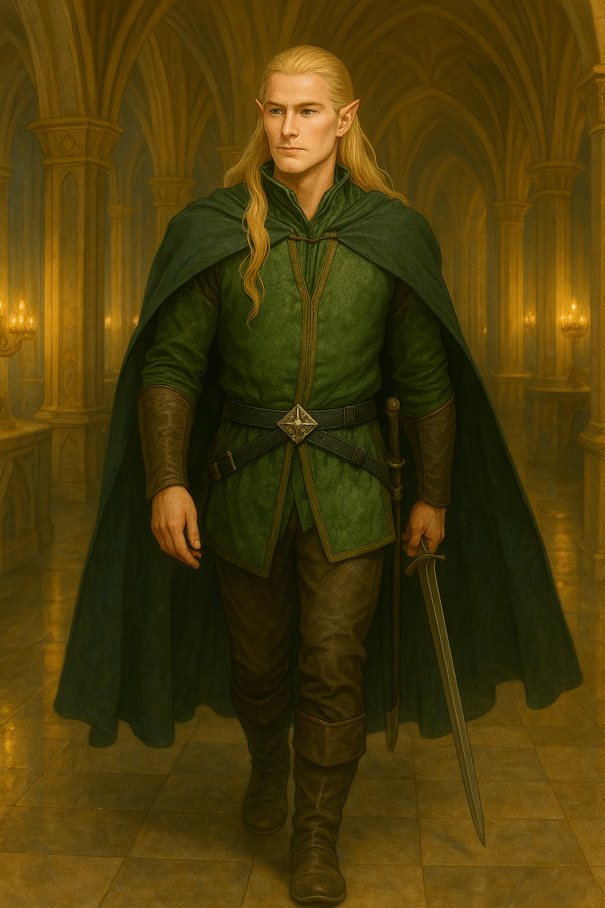
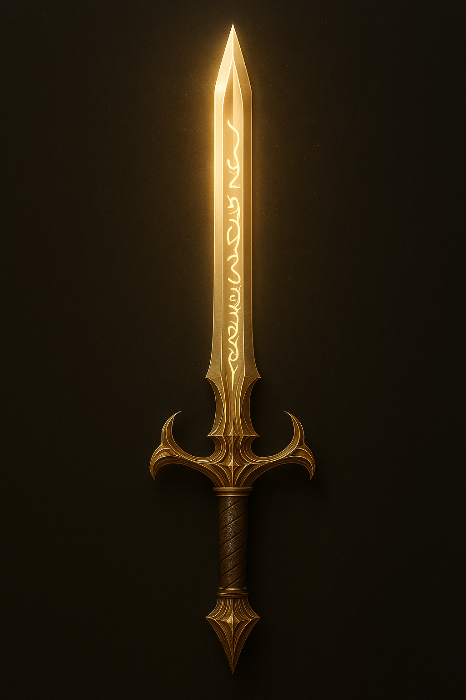
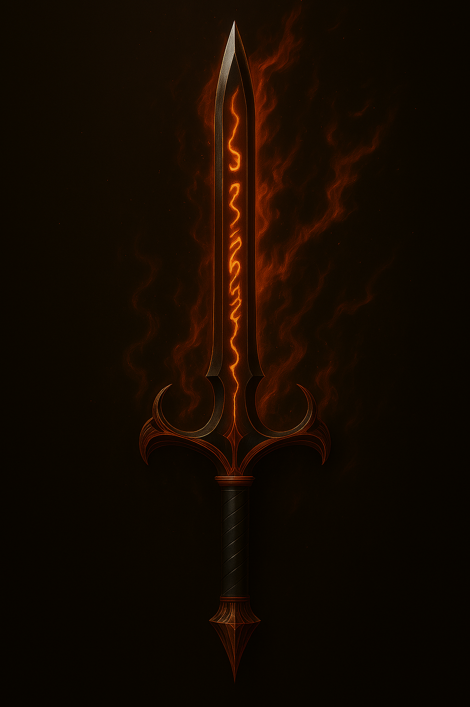

Galeria de Arte Lendária

Noada entre as florestas douradas

O guardião da luz esquecida
Irmão de Legolas | Elfo Lendário de Vallinor

Noada entre as florestas douradas
O guardião da luz esquecida

Ascard — Lâmina da Luz Celestial
Lâmina da Luz Celestial — brilha como o sol nascente sobre os campos élficos.
Lâmina da Fúria Ardente — forjada nas chamas de Aulë, pulsa com energia rubra.

Azarog — Lâmina da Fúria Ardente
Noada, filho do rei Thundril e irmão mais novo de Legolas,nasceu em Vallinor e passou sua infância e um pouco da sua vida adulta la até ir para o reino de seu pai na terra média e é irmão mais novo de Legolas. Cresceu entre canções élficas e histórias dos grandes reis tendo um grande encinamento em várias artes e místicismos.
Viveu muitos anos em Vallinor, onde aprendeu artes arcanas e se tornou mestre em espadas e arco. Suas lâminas gêmeas, Ascard e Azarog, foram forjadas nas chamas sagradas de Aulë.
Participou da Batalha do Anel contra Sauron, lutando ao lado de Aragorn, Gandalf e outros heróis. Esteve presente na coroação de Aragorn, e após a vitória, retornou à Vallinor como elfo lendário.
Hoje, Noada é citado nas crônicas élficas como guardião da luz esquecida. Suas espadas repousam em um templo cristalino, aguardando tempos sombrios.